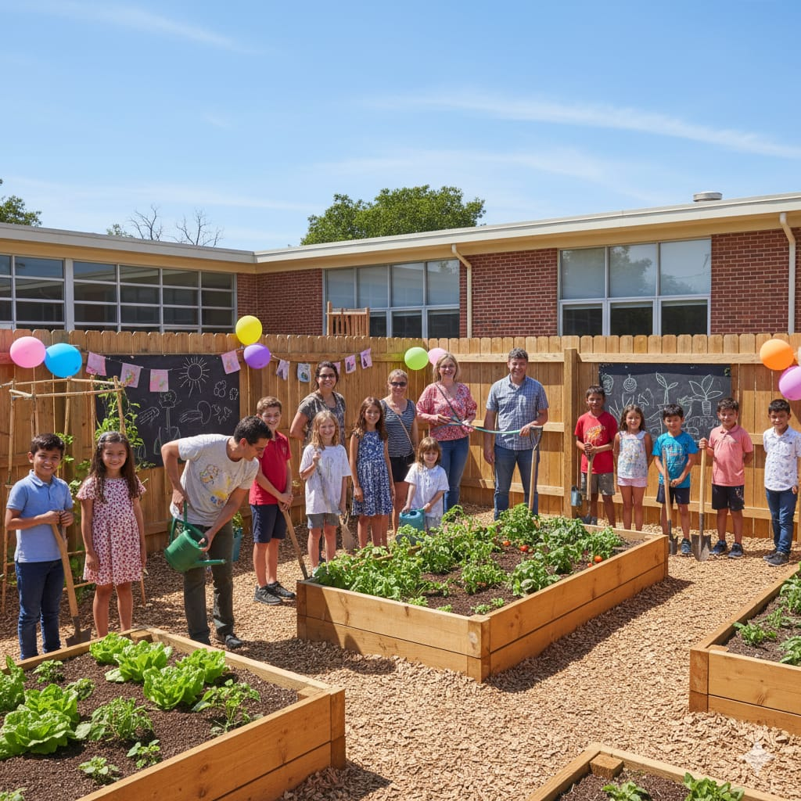
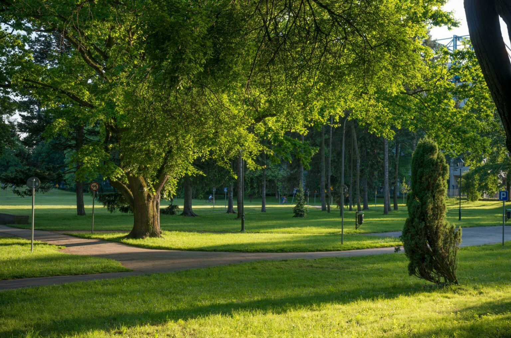

Sobre a ONG
Somos uma organização dedicada à preservação ambiental e ao plantio de flores nativas. Nosso objetivo é promover a biodiversidade e envolver a comunidade em ações sustentáveis.
Nossa História
A VidaVerde nasceu em 2025 com o objetivo de proteger o meio ambiente, preservar florestas, conscientizar as pessoas sobre sustentabilidade e promover o plantio de árvores, flores, plantas frutíferas e hortas.
Missão, Visão e Valores
- Missão: Incentivar a preservação ambiental e a sustentabilidade.
- Visão: Ser referência nacional em projetos de conservação e educação ambiental.
- Valores: Sustentabilidade, preservação, ética e voluntariado.
Equipe
- Carlos Gomes – Meio ambiente e sustentabilidade
- Eduarda Maciel – Pesquisa e Monitoramento
- Isabela Gomes – Voluntariado
- Marcia Cristiane de Oliveira – Coordenadora de Projetos
- Sophia Cristine – Educação e engajamento
- Weslley Marques – Comunicação e Marketing
Galeria de Fotos



Acreditamos que juntos podemos fazer a diferença para tornar o mundo melhor.